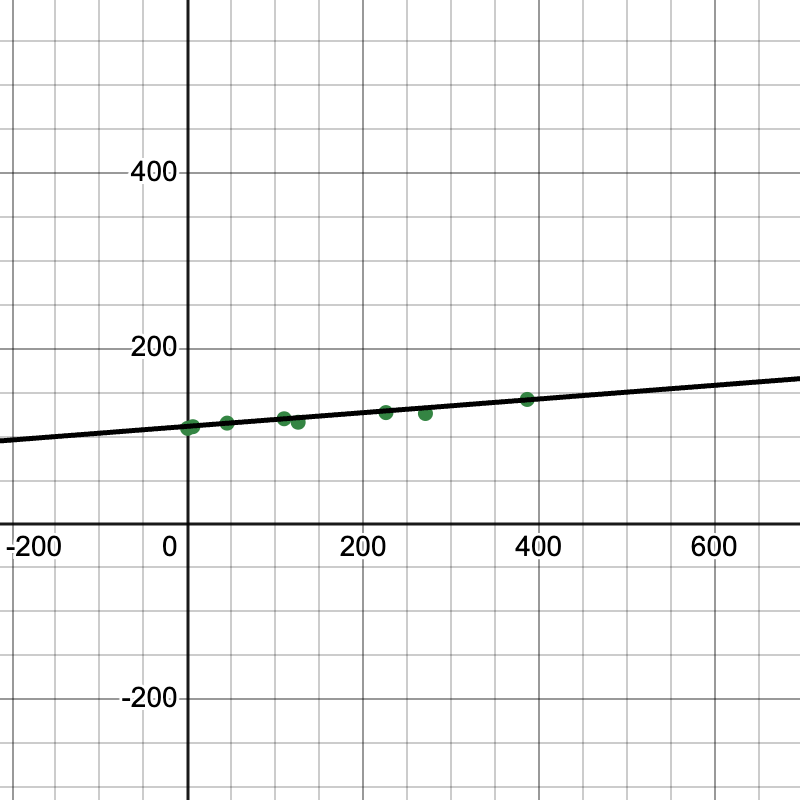
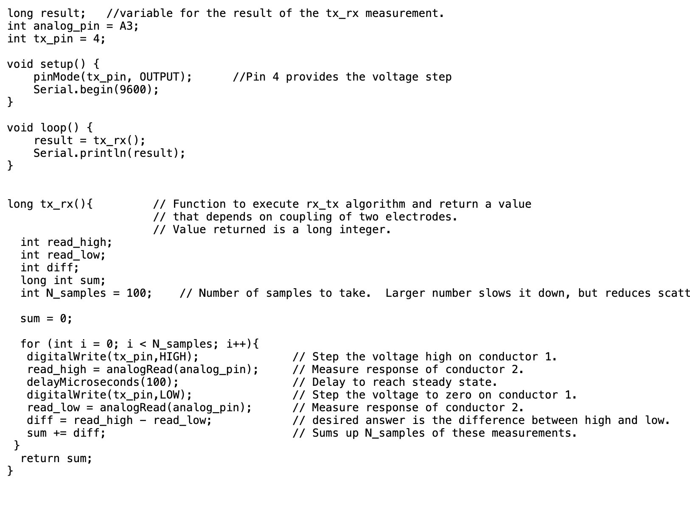
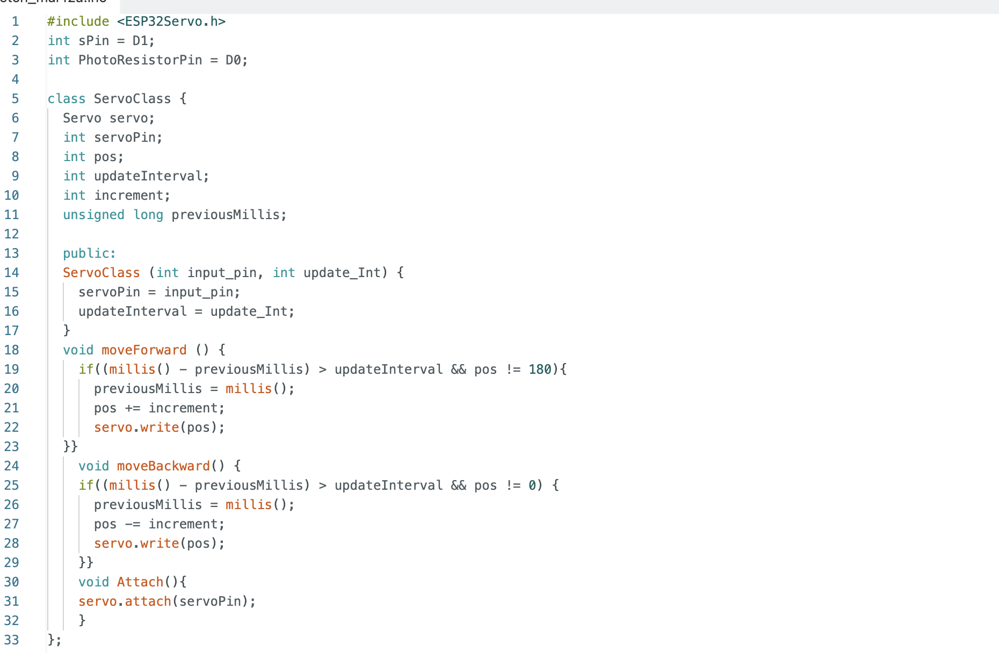
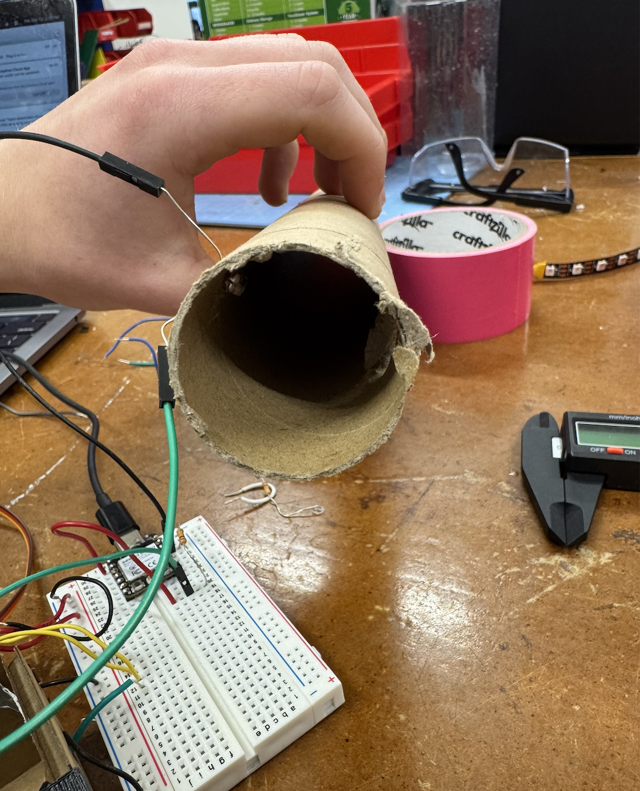

My group made a pressure capacitive sensor by placing a squishy pieice of foam in between two pieces of copper. When weight is applied to the sensor, the foam compresses, brining the two copper plates closer. Since the material in between, the voltage, and the size of the plates stays the same, the difference in current flow can be explained entirely by the difference in the distance which can be explained entirely by the pressure on the sensor. To build this project, we relied on the code that was given to us in class as pictured. To calibrate the sensor we put different weights upon it and measured the voltage through our ESP32. Through doing this, we were able to conclude that each one gram increase corresponded with a 0.0778 volt increase in voltage by using linear regression (which we choose to use because the points on the graph looked linear.)


For my own portion of the project, I choose to calibrate a photoresistor to measure marbles rolling. Not only *will* it detect marbles, but it will also be able to calculate their velocity based on how long they are blocking the light. To do this, I shined a light through one side of the paper towel roll and put my photoresistor on the other. My code also uses the C++ Object structure by creating objects for the photoresistor and the servo. In the future, this will make this code more modular and scalable. Upon plotting the points with the marble rolling through and not rolling through, the values fluctated from ~3200 to ~1900. This relationship is piecewise and can be mapped to a binary function. Soon, I will map it to a velocity function by including time. Another challenge I faced during this process was choosing the right resistor. With a 10k Ohm Resistor, the photoresistor values were too high and there appeared to be almost no difference. Going to a 30k ohm resistor, though, allowed my photoresistor to be more sensitive to changes in the light level.

